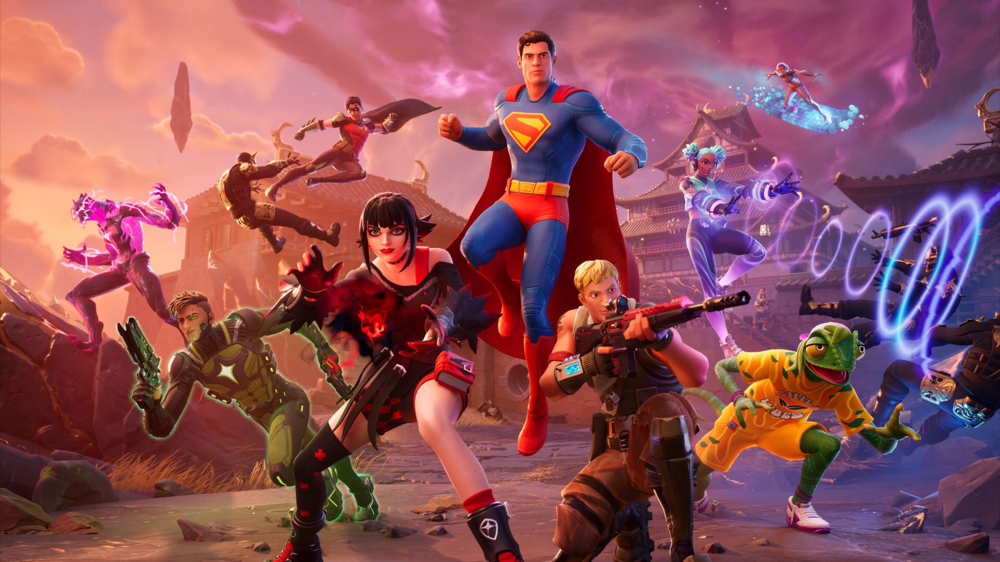
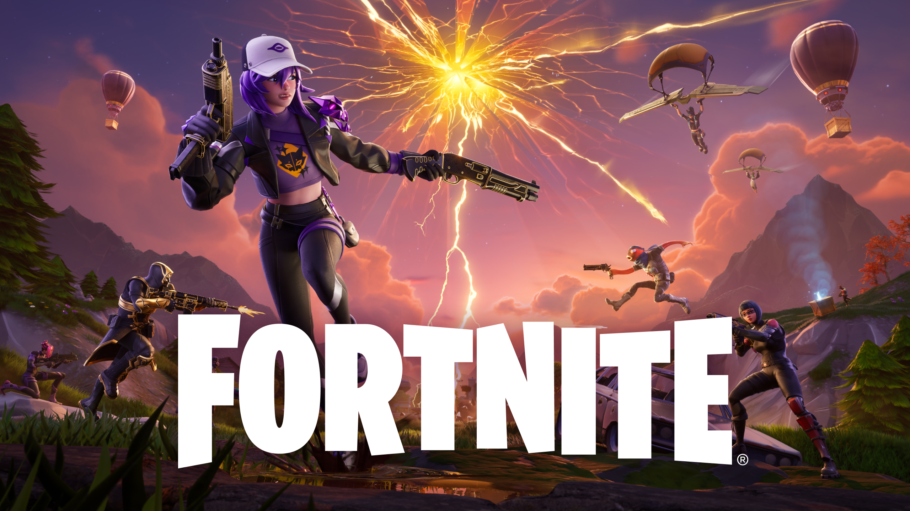
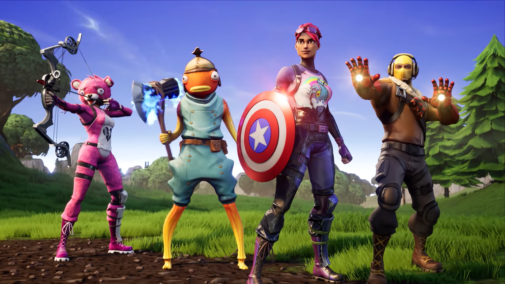

Fortnite
Fortnite é um jogo eletrônico multijogador online revelado originalmente em 2011, desenvolvido pela Epic Games e lançado como diferentes modos de jogo que compartilham a mesma jogabilidade e motor gráfico de jogo. Os modos de jogo incluem Fortnite: Save the World, um jogo cooperativo pay-to-play de sobrevivência para até quatro jogadores, que devem lutar contra carcaças (zumbis) e defender objetos com fortificações que eles podem construir, e Fortnite Battle Royale, um jogo free-to-play do gênero battle royale, onde até 100 jogadores lutam em espaços cada vez menores para serem a última pessoa ou time vencedor. Ambos os modos de jogo foram lançados em 2017 como títulos de acesso antecipado; Save the World está disponível apenas para Microsoft Windows, PlayStation 4 e Xbox One, enquanto Battle Royale foi lançado para essas mesmas plataformas, incluindo o Nintendo Switch e dispositivos Android. Em 2020, foi adicionado para a nova geração de consoles PlayStation 5 e Xbox Series X/S.

Desenvolvimento
Fortnite foi revelado pela primeira vez em 2011 no Spike Video Game Awards, com o ex-diretor de design da Epic, Cliff Bleszinski, apresentando um trailer para o jogo. Donald Mustard, líder criativo da Epic, disse em 2017 que este anúncio foi "três semanas depois de ter surgido a ideia, antes mesmo de ter feito o jogo". O jogo, que começou como um projeto interno de Game Jam, representa uma partida do trabalho anterior da empresa. Como Bleszinski explicou durante o evento Spike, Epic queria "mudar as coisas um pouco e fazer algo diferente e divertido" com Fortnite, descrevendo como "um mundo onde você explora, você destrói, você constrói e, finalmente, você sobrevive". Em uma entrevista com o Engadget, ele também fez menção dessas declarações, alegando que o jogo seria diferente da série Gears of War: "Não há dudebros nele ... Não é que haja algo de errado com isso, certo? Mas criativamente Para a equipe, Gears tem sido incrível para nós. Mas é divertido abrir nossas asas e fazer algo que é um pouco diferente do habitual ".
Recepção
Com ambos os modos de Fortnite ainda considerados como acesso antecipado, os jornalistas ainda não forneceram revisões abrangentes de nenhum dos modos. O modo Save the World alcançou mais de um milhão de jogadores em agosto de 2017, pouco antes do lançamento de Battle Royale.
Fortnite Battle Royale, por outro lado, tornou-se um sucesso financeiro significativo para a Epic Games, levando-os a separar as equipes de desenvolvimento entre Save the World e Battle Royale para fornecer um melhor suporte para ambos os modos. Dentro de duas semanas de lançamento, mais de 10 milhões de jogadores haviam jogado o modo, e em junho de 2018, logo após o lançamento do jogo para o Nintendo Switch, atingiram 125 milhões de jogadores. A receita de Fortnite Battle Royale durante o primeiro semestre de 2018 foi estimada em centenas de milhões de dólares por mês.

Prêmios e indicações
O jogo foi indicado na categoria "Melhor Jogo Cooperativo" pela PC Gamer, e como "Melhor Jogo Espectador" pela IGN.
| Ano | Premiação | Categoria | Resultado |
|---|---|---|---|
| 2017 | The Game Awards 2017 | Melhor Jogo Multiplayer | Indicado |
| 2018 | 16th Visual Effects Society Awards | Melhores Efeitos Especiais em um Projeto em Tempo Real (A Hard Day's Night) | Indicado |
| 2018 | D.I.C.E. Awards 2018 | Melhor Realização Proeminente em um Jogo Online | Indicado |
| 2018 | SXSW Gaming Awards 2018 | Excelência em Multiplayer | Indicado |
| 2019 | D.I.C.E. Awards 2019 | Jogo Online do Ano | Venceu |
| 2019 | The Game Awards 2019 | Melhor Jogo em Andamento | Venceu |
